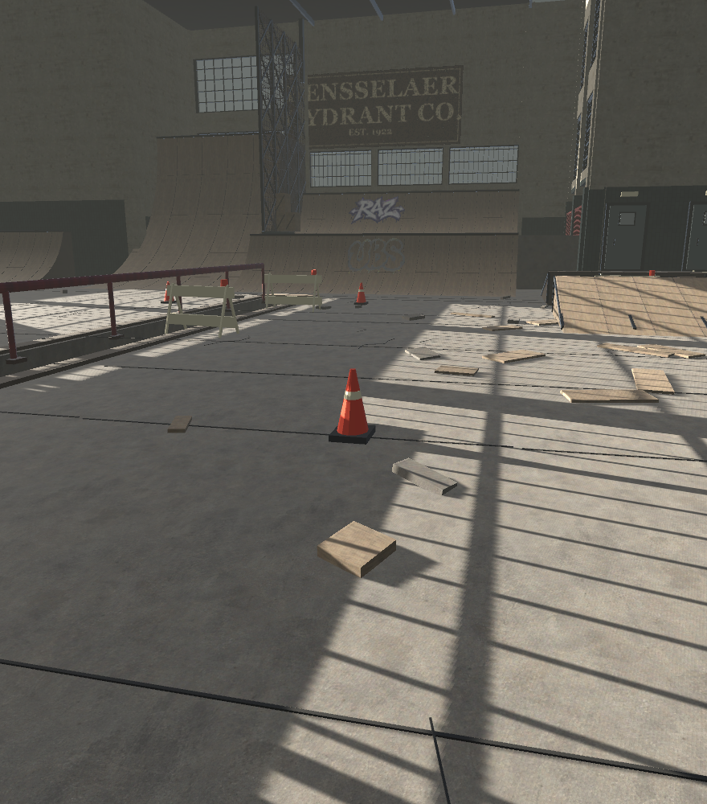
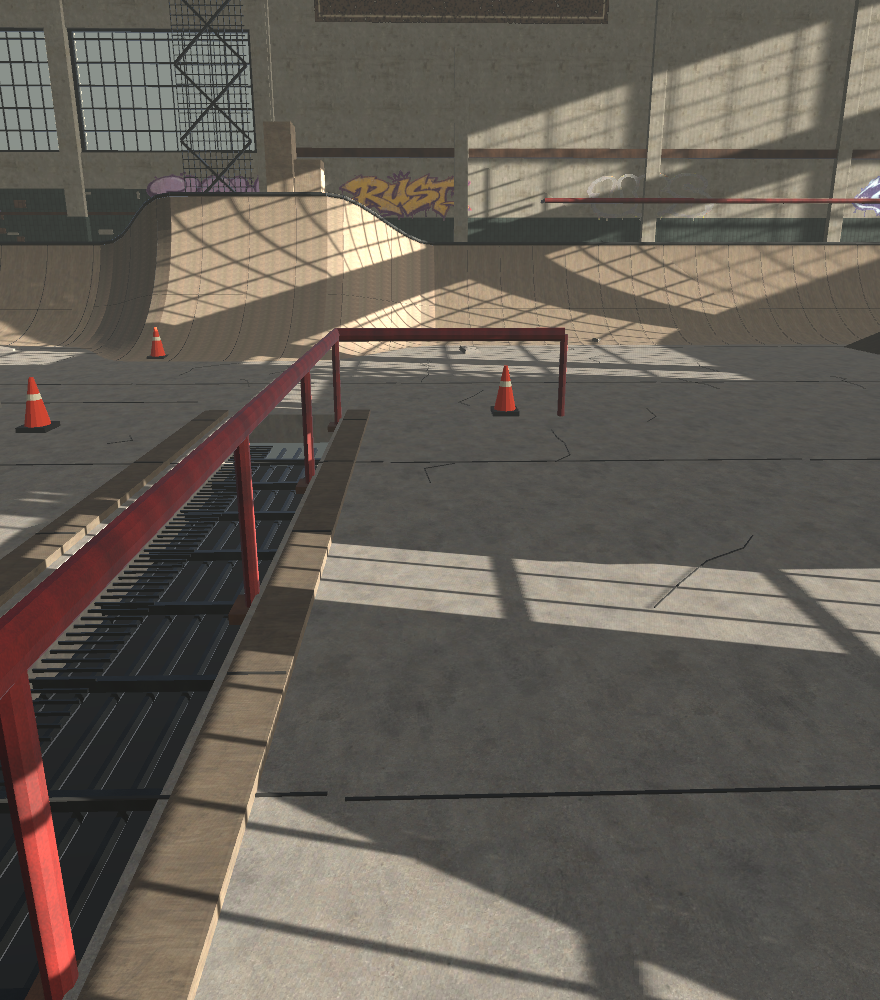
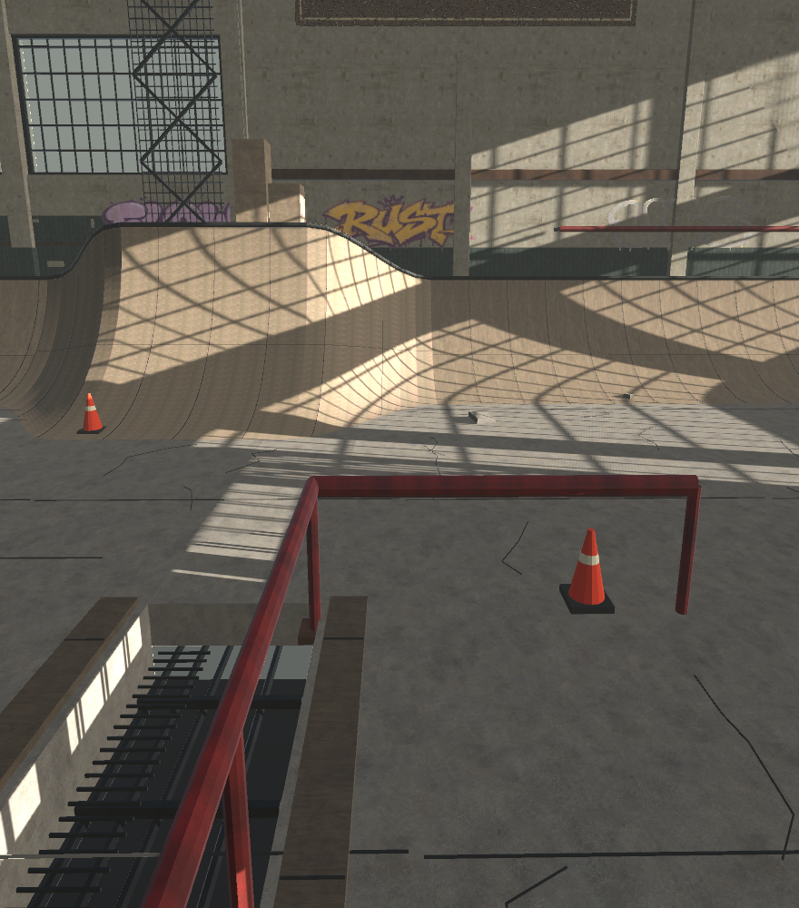
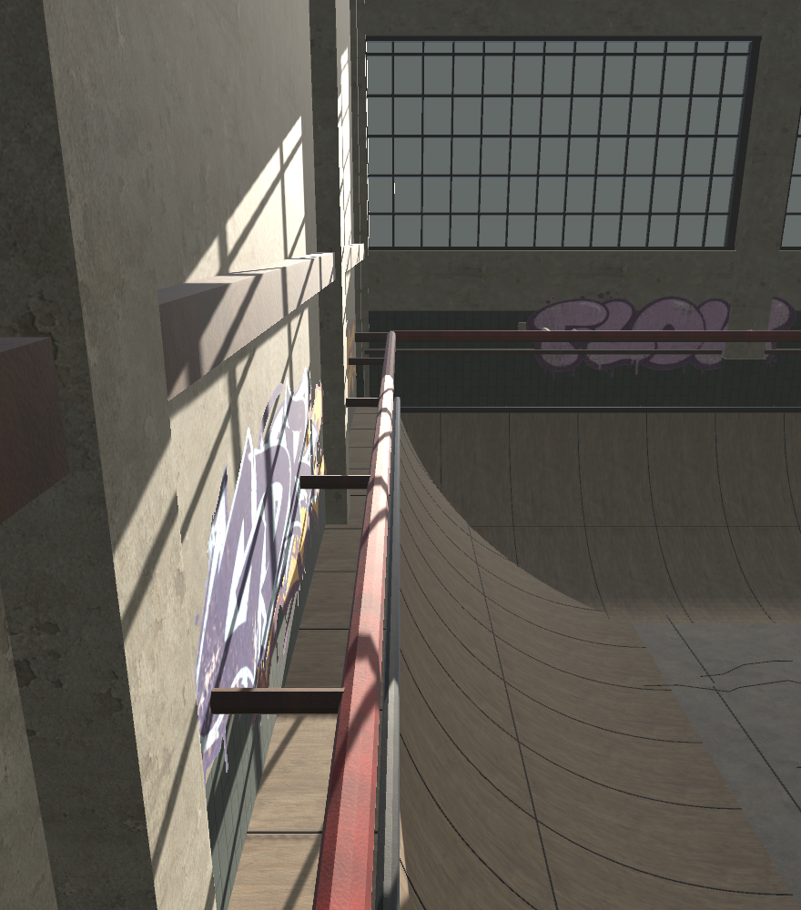
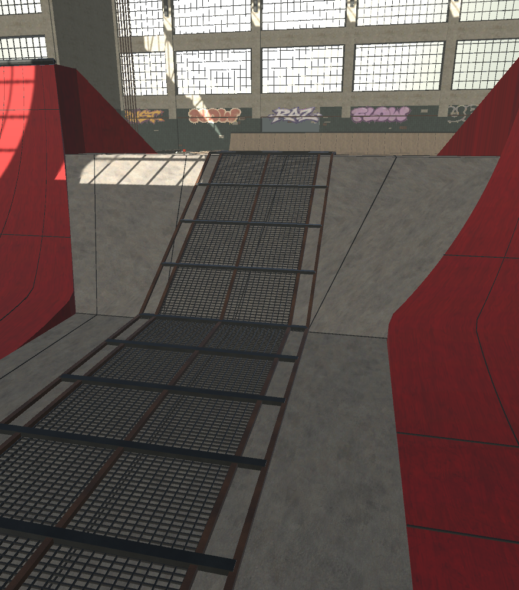
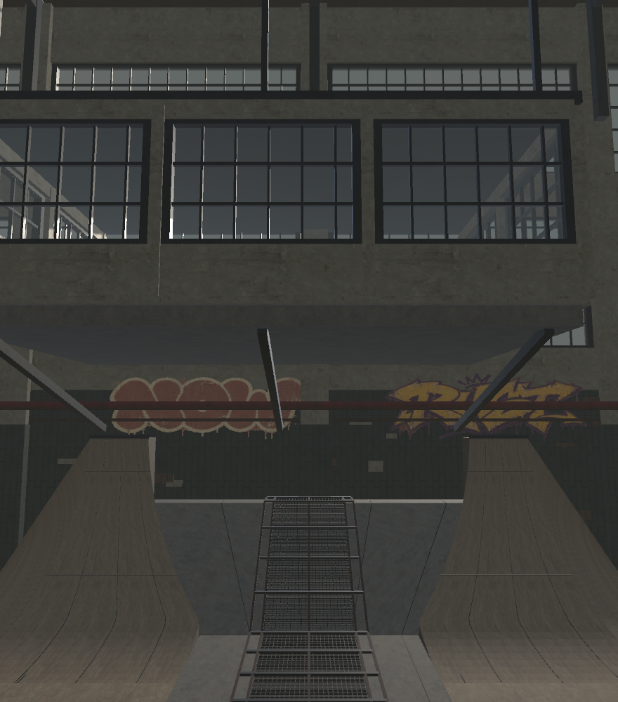
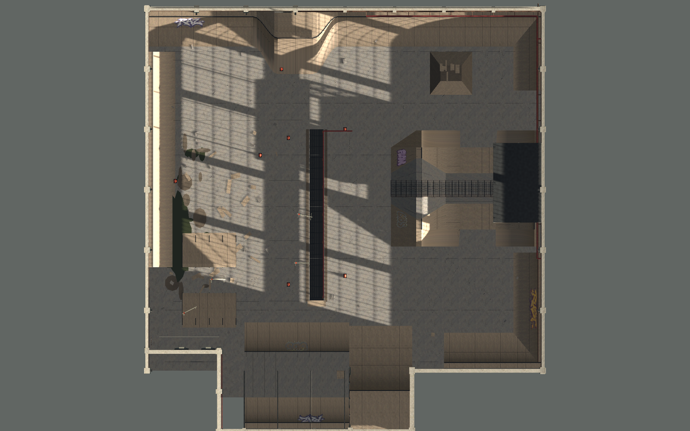

WAREHOUSE / SPATIAL VOLUME REVIEW / V7
北端凸形坡面、左右平台与办公室体量
这一版修正了北端在平面上的凸出造型，扩大并降低办公室，补上办公室侧窗、北墙转角管道和更细的通道格栅。还不能说与视频一致。全馆宽度、1:46 的准确朝向，以及部分设施的投影比例仍有疑点。以下逐张展示实际渲染和原图，不用几何检查结果代替图像相似度。
1:32 · 橙衣玩家起点
保持原起点相机。右侧门台是凸出建筑，侧面有窗、柱和橙色栏栅。前坡、后坡和中间平台是三个不同的表面。门台本轮未继续移动，侧面露出比例仍有偏差。


1:35 · 接近南端平台
保留原机位检查门台和 UBS 前坡的相对位置；场景并未按这一张图重新拉宽。总厅宽度仍是待确认的参数。


1:39 · 红扶手与北端高台
沿用 V6 相机。高台前脚从 Z=15.8 前移到 13.4，凸出部分的台沿从约 19.98 前移到 17.58；后边界仍接到 Z=21。左右低坡保留 2.6 m 顶面，高平台为 3.8 m。箱子移至新台沿附近。


约 1:40 · 新图中的凸形坡面
新增估计机位。左图是用户提供的裁图，右图是完整的 880×1000 渲染，未将图片拉伸对齐。凸形轮廓已由实际网格形成；坡顶宽度、肩部曲线与前景扶手交点仍不完全一致。


1:46 · 沿墙管道与转角
本轮回看了 1:44、1:46、1:48、1:50 及 2:19–2:21。旧机位朝南，主要看见办公室实心侧墙，无法解释参考窗面。本轮采用沿北墙朝东的候选机位，并补北墙至东墙的管道连接。朝向为中等把握的推断；窗区分格、尽头距离和光暗仍明显不同，不能宣布已经匹配。


1:52 · 金属通道与两侧曲坡
沿用 V6 通道机位与坡面尺寸再核对：底部灰色通道约 3.54 m，出口展开至 7 m，格栅约 1.90 m；两旁木坡高约 3.11 m，金属顶高约 1.72 m。发现格栅像粗梯子，已补密纵横金属网。前景曲坡和窗墙的投影仍需继续校准。红色仅为参考状态渲染，场景保存为木色。


办公室 · 从半管缩放组中独立出来
原办公室跟着半管压缩，主体平面约 3.53×4.76 m，楼板底标高 5.73 m。现在约 5.66×9.00 m，楼板底 4.80 m，新增正面三组窗、两侧各两组窗；东端仍靠厂房墙，位于半管上方。以下为固定反向检查机位，不当作视频 2:19 的精确机位。1:46 画面里的横向窗面是否属于它，仍保留疑点。




俯视检查 · 没有把所有平台合成一块

图上为北端：局部凸形高台与左右低台相接。图下为南端：右侧高落坡、左侧较低的前后坡平台组及门台建筑分开建模。主厅目前约 45.92×42 m，南端凹口另向后延伸。全馆加宽多少尚无足够依据，本轮未给出虚假的精确结论。
| 核对项 | 本轮结果与剩余差异 |
|---|---|
| 凸出门台 | 实际突出墙线、侧窗、橙栅、双门与三级台阶保留。起点和 1:35 再渲染；侧面可见宽度仍需校准。 |
| 北端坡形 | 坡脚向场内伸出，坡顶平台加深，两肩平滑回接低坡。箱子随台沿前移；新截图与扶手投影仍有差异。 |
| 办公室 | 降低楼板、扩大平面并补侧窗。尺寸依靠截图估计；未把 1:46 的窗面直接当成确定证据。 |
| 金属通道 | 宽度、高差和两侧坡复查；格栅变细。坡面比例仍未达到逐像素一致。 |
| 保存与碰撞 | 场景重开通过；70 处曲坡、243 处金属通道、展开口、门台阶、北端新凸面及办公室楼板支撑检查通过。83 网格、117946 三角形、46 静态碰撞体。 |
北端固定机位 · V6 / V7 叠图
这一组相机位置、朝向、FOV 与 V6 相同。可切换修改前后，再调整原图透明度看实际差异。
完整检查输出 · 全部相机参数 · V6 旧报告 · 原视频 1:30 起
场景：Assets/Max/WarehouseRecreation.unity。原 MaxScene.unity 未替换。修改前场景、网格、材质、预制体、脚本和预览保存在 Source~/BeforeSpatialVolumeAudit~。没有测试滑板/Leap Motion 操控；灯光、涂鸦、旧化与杂物尚不等同原作。